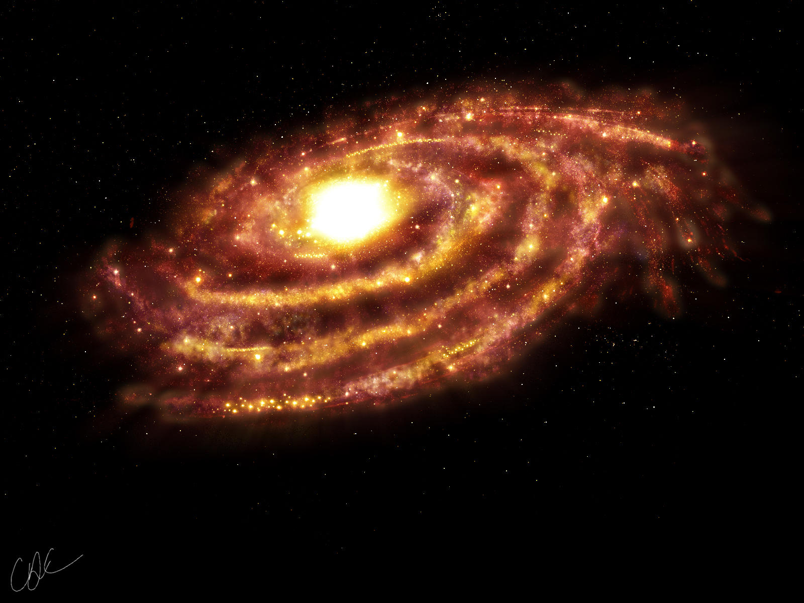

Чуматський шлях

Чума́цький Шлях, також Моло́чний Шлях або Гала́ктика[вин. 1] — спіральна галактика, у якій розташована наша Сонячна система. Радіус зоряного диска Чумацького Шляху становить близько 16 кілопарсек. Повна маса Галактики з урахуванням темної матерії оцінюється в 1—2 × 1012 M☉. У Чумацькому Шляху знаходиться від 100 до 400 мільярдів зір, а його світність становить 2 × 1010 L☉. Порівняно з іншими спіральними галактиками Чумацький Шлях має досить велику масу та високу світність. Сонячна система розташована на відстані 8 кілопарсеків від центру Галактики і рухається навколо нього зі швидкістю 220 км/с